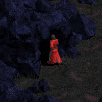

| Ghast's Grotto | |
 |
Welcome to my Diablo multiplayer fanpage. |
- Ghast |
| The Dark Graphics Tool | July 07, 2023 | |||||||||||||||||||||||||||||||||||||||||||||||||||
|
This is a guide to using The Dark Graphics Tool(TDG) to extract content from MPQ files in Diablo(and other games). Downloads:
1 - Ladik's MPQ Editor. Extraction:
1 - Extract the Diablo 1 listfile from it's zip file. Item Extraction:
7 - Start TDG, click on "open cel" and navigate to the objcurs.cel. Open that and then click "open pal". Open "town.pal". Monster Extraction:
9 - For monsters click "open cl2". Below is the monsdat.cpp info for an Advocate. Boss Extraction:
17 - For boss monsters there is sometimes(maybe everytime) an extra step. GIMP GIF Creation:
21 - open gnu image manipulation program (GIMP). Animated Monster GIF ms:
| ||||||||||||||||||||||||||||||||||||||||||||||||||||
These are the correct timings of animated gifs for each monster type.
|
||||||||||||||||||||||||||||||||||||||||||||||||||||
- Ghast |
||||||||||||||||||||||||||||||||||||||||||||||||||||
| Blizzard FTP | March 25, 2021 |
|
Blizzard used to have an FTP site that you could go to and download all the patches for Diablo. It was http://ftp.blizzard.com. I could have sworn it was a true FTP site, but I cannot find a historical link with the "ftp://" scheme. Maybe I just put that instead of "http://" because I assumed it was necessary and it just worked. It was a pretty simple layout, which I appreciated. The site still exists. It no longer displays in the manner typical of FTP sites. It is almost non functional. You can see the original at archive.org. As you can see in this support article, Patching Classic Games,(Blizzard scrubbed this page. Link is now to the archive) the links still function properly. All you need is to know what link to use. You can browse the archive, copy the link for the file you want, paste it into your address bar, then remove the portion of the address preceding the "http://". |
|
- Ghast |
|
| Shrine Hunting | January 30, 2021 |
|
There are two shrines which are commonly sought for improving a character or items; Hidden and Enchanted. Which attribute these shrines affect is supposed to be random, but it is not. You can see more details at The DSF Buglist and the bottom of the Shrines page(Chapter 7) at JG Online. To maximize the potential for getting the desired effect, you need to get these two shrines as soon as possible when you start a new game. My preferred method is to start a game, check Gris for items, and then enter the catacombs. Once there I look around the open area that I am in to see if there are shrines. If there are none, I start a new game. The benefits of this method include getting to check Gris for items, avoiding black deaths(beware: they do exist on dlvl 5) which permanently reduce your life when they hit you, and the higher frequency that this particular spot in the dungeon produces shrines. Tip: If you randomly come across a Hidden Shrine while traipsing about the dungeon, have another character join the game and come down via town portal. The new character should have the bugged shrine. If it is a Hidden Shrine, give the new character the items and hit the shrine. Happy hunting! |
|
- Ghast |
|
| The Horadrim Server/Discord | January 5, 2021 |
|
If you are looking for the most active community of Diablo players, The Horadrim is it! Lothar hosts a b.net PvPGN server. You can play with the original retail version of the game(CD) or with the GoG classic version. If you cannot host games on b.net and are tired of trying to figure out how to forward ports, no worries! Lothar has you covered. You can install ZeroTier and connect with other ZeroTier players just like you would on b.net. In The Horadrim Discord you will find a tutorial for getting everything up and running, as well as other friendly players who are more than willing to assist in troubleshooting any problems that might arise. One benefit of playing there is the ability to use quality of life mods online without issue. I look forward to seeing you there. GL HF DD! |
|
- Ghast |
|
| Some Notes on Shopping for Items | June 28, 2020 | |||||||||||||||||||||||||||||||||||||||||||||||||||||||||||||||||||||||||||||||||||||||||||||||||||||||||||||||||||||||||||||||||||||||||||||||||
|
I have calculated some commonly sought after items that can be shopped in town. I do not know the probabilities of shopping items in town. Therefore, some of these might be easier to find in the dungeon. Others can only be found in shops. Some of these represent the assumed ideal level and others the lowest possible level. With Gris I am aiming for the maximum amount of slot availability at the lowest character level, and the minimum clvl at Wirt or Adria(except bountiful table). These may or may not be the most probable character level to find the items. Most other sought after items not on this list are found in d15. This list is not exhaustive(yet!). |
||||||||||||||||||||||||||||||||||||||||||||||||||||||||||||||||||||||||||||||||||||||||||||||||||||||||||||||||||||||||||||||||||||||||||||||||||
Ideal character levels for Bountiful staff shopping:
|
Various items from all vendors:
|
Some dungeon drop probabilities(using Calculators):
Flaming Dagger of Swiftness - n7 (weapon rack/brokenhead bangshield) Gold jewel of Heavens - n14 (Fangspier)(some monsters can drop in hell levels) Garnet Buckler of Brilliance - n11 Massive LWB of Swiftness - n11 Savage LWB of the Heavens - n15 Emerald LWB of the Heavens - n15 Spiders Ring of Balance - N1 Crimson Buckler of Blocking - N5 (brokenhead bangshield) |
||||||||||||||||||||||||||||||||||||||||||||||||||||||||||||||||||||||||||||||||||||||||||||||||||||||||||||||||||||||||||||||||||||||||||||||||
- Ghast |
||||||||||||||||||||||||||||||||||||||||||||||||||||||||||||||||||||||||||||||||||||||||||||||||||||||||||||||||||||||||||||||||||||||||||||||||||
| Diablo® - ©1996 Blizzard Entertainment, Inc. All rights reserved. Diablo and Blizzard Entertainment are trademarks or registered trademarks of Blizzard Entertainment, Inc. in the U.S. and/or other countries. |